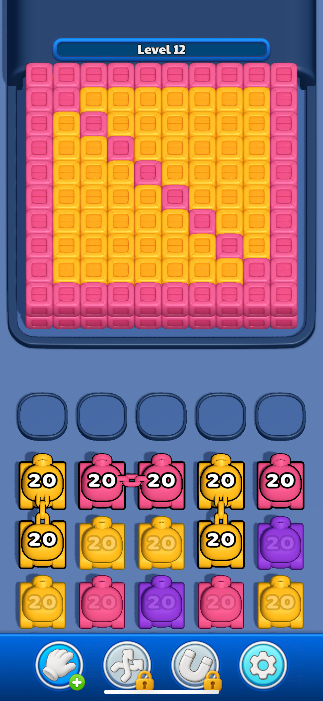
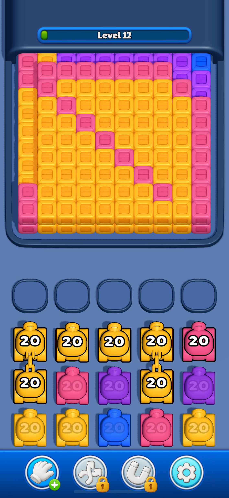

<section class="gallery">
    
    
</section>

<style>
.gallery {
    display: flex;
    gap: 16px;
}

.gallery img {
    width: 300px;   /* нужный размер */
    height: auto;   /* сохраняет пропорции */
}
</style>
